Los barceloneses que no hayan sucumbido a la tentación de abandonar la ciudad durante este largo puente tienen una ocasión inmejorable para iniciarse en el mundo del golf.
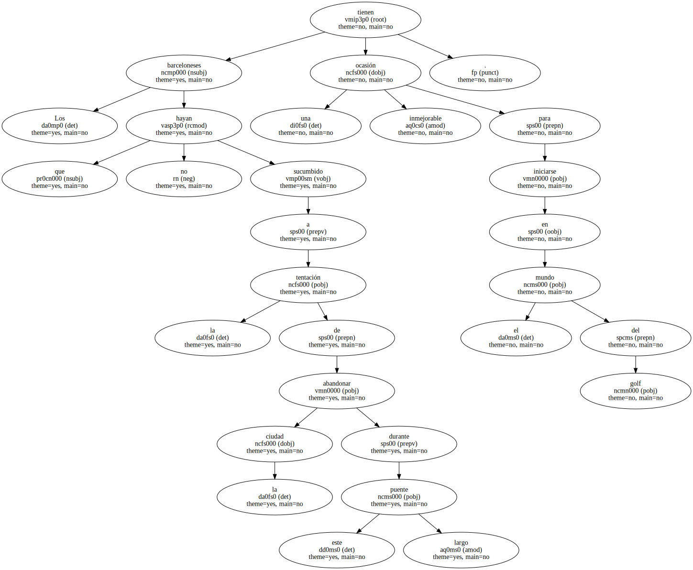Barcelona se ha convertido , hasta el próximo domingo , en un gran campo de ese deporte , con tres hoyos situados en el Puerto Olímpico , el parque de la Ciutadella y la Font Màgica de Montjüic.
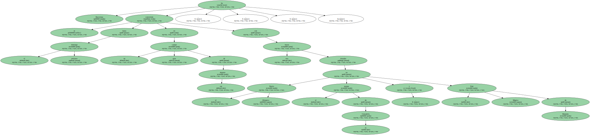El objetivo de popularizar un deporte que aún hoy lleva aparejada la etiqueta de elitista.
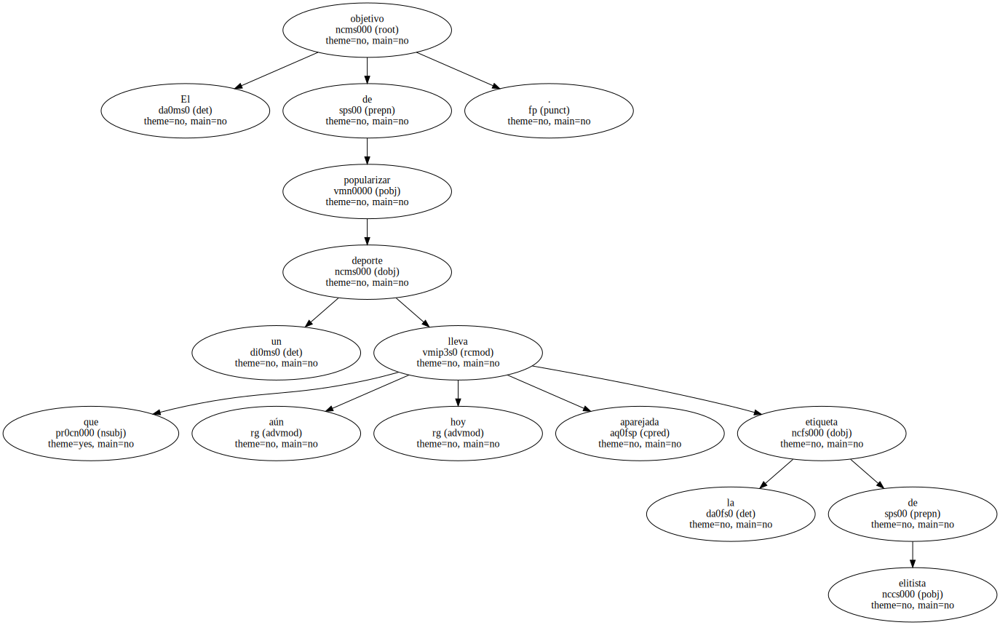El Moll de Marina , en el Puerto Olímpico , acoge desde ayer una peculiar competición abierta a todo el público.
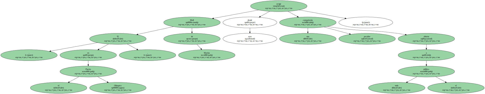El reto es embocar la bola en un hoyo situado a 105 metros de distancia con un solo golpe.
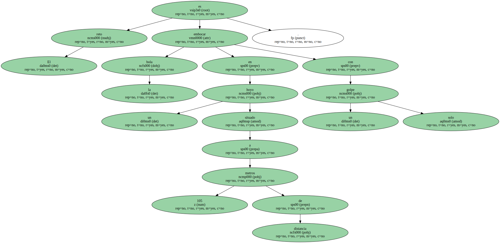Un flamante vehículo de color dorado espera a la persona que lo consiga , misión casi imposible.
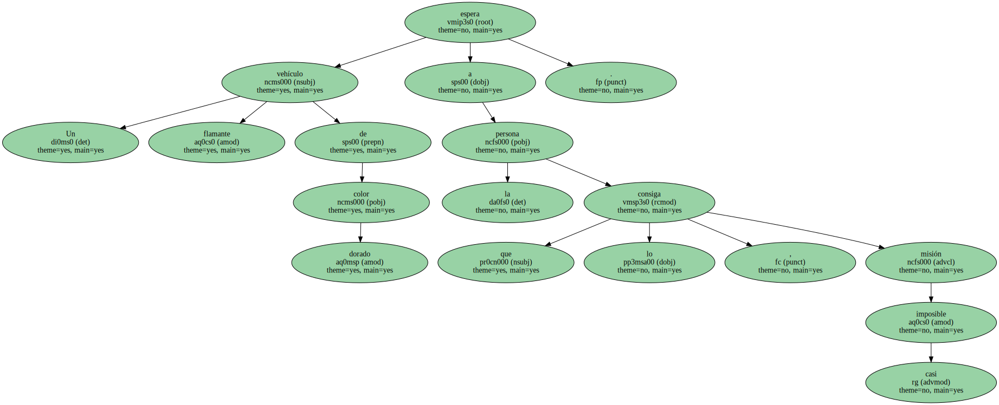El principiante , antes de atreverse a zurrarle a la bola , deberá familiarizarse con una terminología cien por cien inglesa : tee , green , handicap , swing o búnker , son algunas de las palabras que no dejan lugar a la duda sobre dónde se originó el golf.
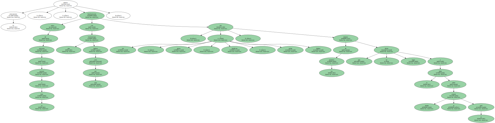Una vez superada esta fase , tendrá que empezar por conocer la mejor posición para atacar la bola.
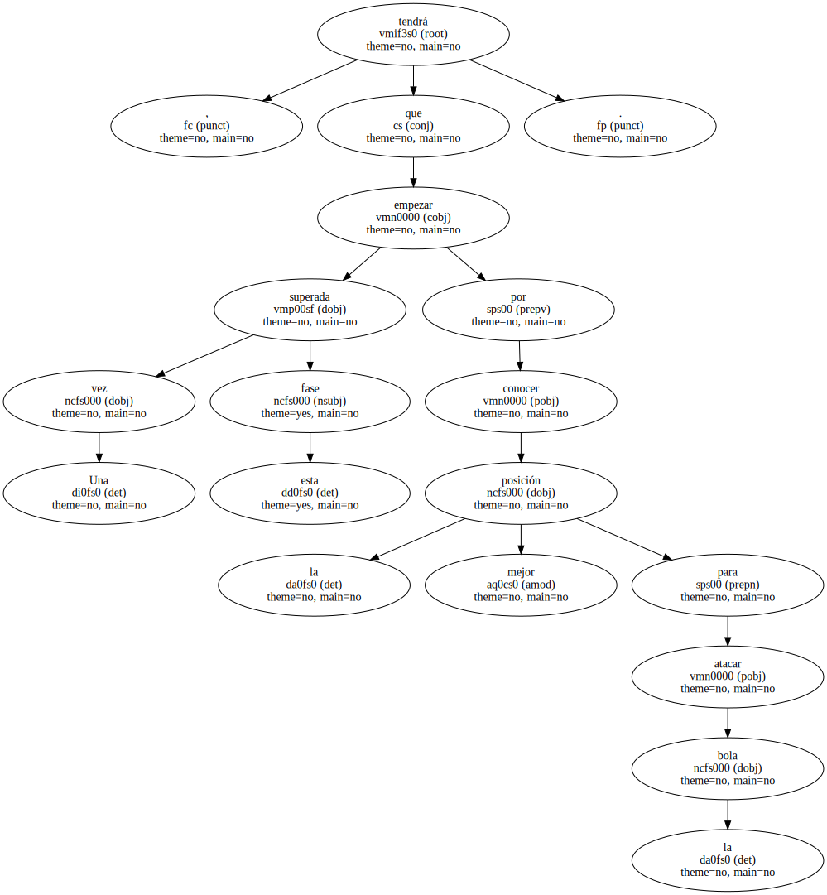" Lo importante al principio no es tanto darle a la pelota sino saber adoptar la buena posición de golpeo , flexionar las rodillas pero sin llegar a agacharse " , alecciona Esmeralda Hurtado , una joven jugadora que enseña a los noveles los secretos del golf en los dos espacios de prácticas habilitados por la Federación Catalana de Golf.
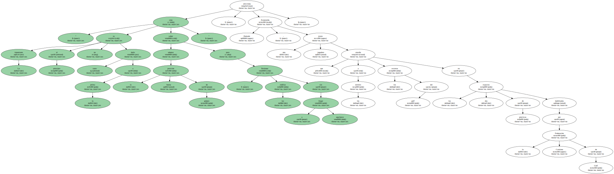La monitora se empeñaba en desmitificar el elitismo del golf.
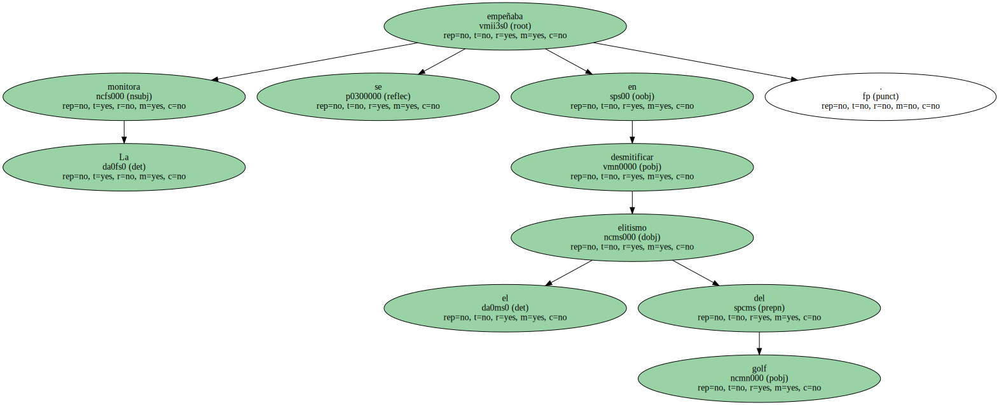" Actualmente hay campos públicos con entradas asequibles y si no quieres comprarte un buen equipo se puede alquilar " , aseguraba antes de recomendar vivamente la práctica de este deporte : " Es un deporte muy relajante y para todas las edades ".

" Demasiado difícil ".
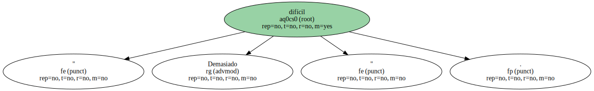Varios miles de personas se acercaron ayer al Moll de Marina , atraídas por la curiosidad de presenciar una iniciativa inédita en la ciudad , aunque sólo unas 200 personas se atrevieron a intentar conseguir el hoyo de un golpe.
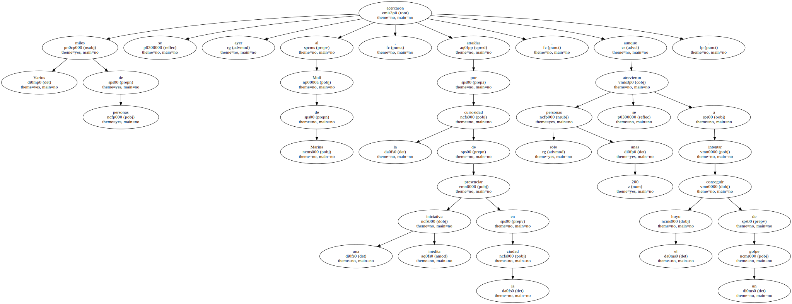El coche sigue sin dueño , pero una mujer se quedó a un metro de la bandera.
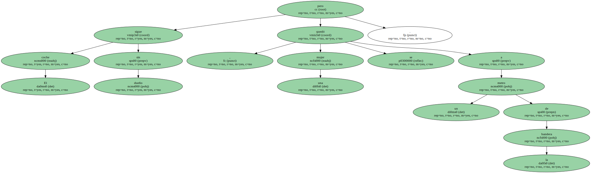" Es demasiado difícil y hace mucho viento " , se justificó Carlos Noguer , un experto jugador tras errar en dos intentos.
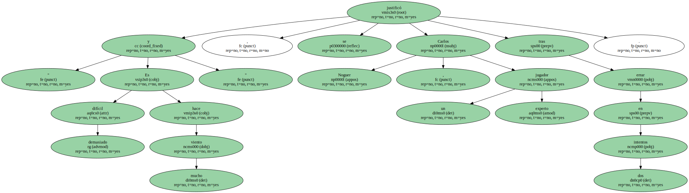La organización del torneo , en el que colabora EL PERIÓDICO , se mostraba muy satisfecha de la respuesta del público.
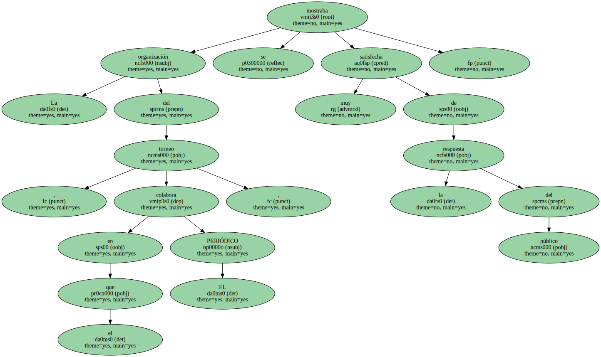" Teniendo en cuenta el día que es y el tiempo que ha hecho , estamos muy contentos " , resumía al final del día Esteve Batlle , director de Wocom Events , promotora de la cita.
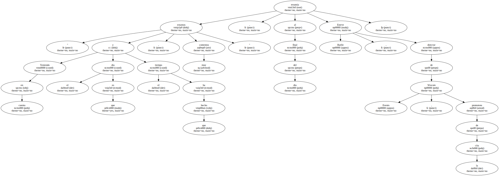Y eso que la lluvia casi lo estropea todo : " Cuando hemos llegado por la mañana , el campo estaba inundado por la lluvia y hemos tenido que achicar agua " , relataba Batlle.
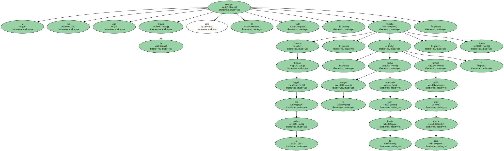Hoy continuará el hoyo en uno con la presencia , a mediodía , de conocidos deportistas.
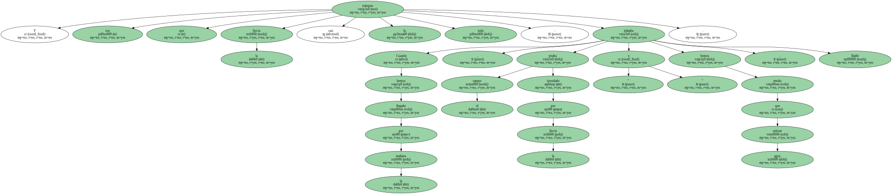El Sábado y el domingo por la mañana se celebrará , además , una competición con jugadores profesionales y famosos , como Johan Cruyff.
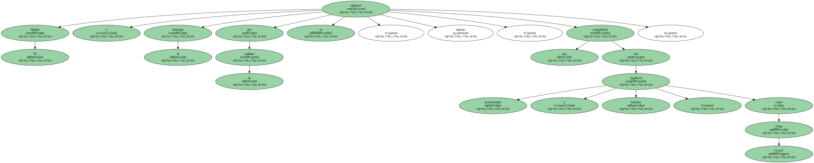